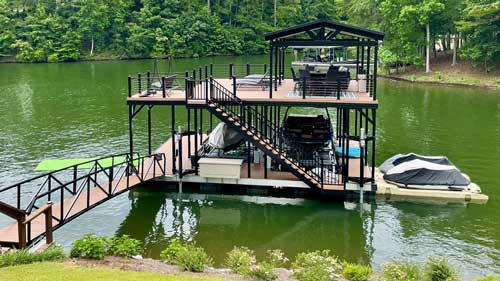
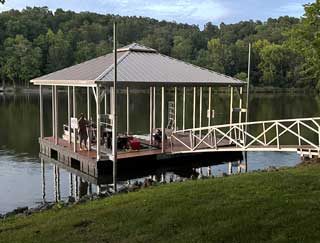
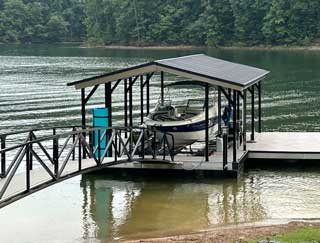
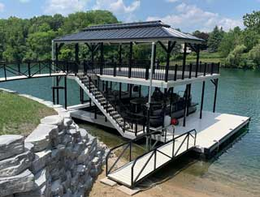
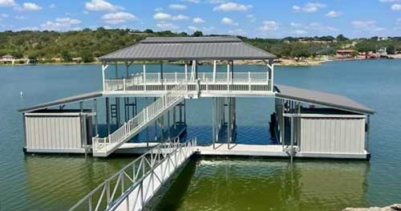
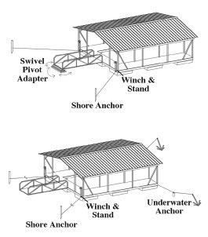
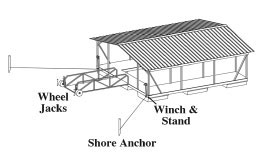
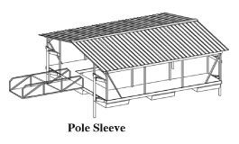
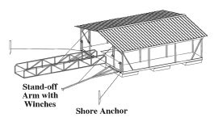
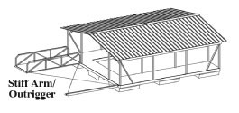

Floating docks are the adaptive solution for diverse shorelines and bodies of water. Our floating boat docks rest on tough sealed floats and can ride out large changes in water level and wakes with ease.

Versatile dock support for variable water levels
Floating docks are the adaptive solution for diverse shorelines and bodies of water. Our floating boat docks rest on tough sealed floats and can ride out large changes in water level and wakes with ease.


The ultimate in durable dock flotation and support
The very foundation of every dock is a quality float, and our boat dock floats set the standard for performance and durability. They keep your dock afloat. This is no place to cut corners, and we don’t.
Our EPS billets are manufactured by nationally recognized companies. These foam-filled, rotomolded polyethylene encasements meet or exceed all U.S. Army Corps of Engineers regulations and are unaffected by salt water, virtually all chemicals and are covered by our exclusive limited lifetime warranty.
Flotation billets are attached to the mainframe using 3/8” stainless steel bolts, 1” stainless steel fender washers and are secured by using nylon lock nuts. The result: floats that remain secure under severe conditions, without separation or movement.

Each Flotation Systems dock is available as a floating dock. To cover a wide variety of shorelines and anchor point access, we offer the many floating dock systems listed below.

The choice between fixed and floating boat docks is a detailed and important one. Flotation Systems has dock anchoring systems for every body of water. From shallow to deep water, in strong currents or on placid lakes, we have a system engineered to provide unmatched support.

Using the correct anchoring system on your dock is critical. Anchoring systems provide the core stability of your dock and directly contribute to its longevity and functionality. See all our dock anchoring options below.
The correct choice for floating dock anchoring depends on many factors, including:

The descriptions here are informational, and any recommendations contained in them are only to provide examples of their common uses. Your Flotation Systems representative will work with you to gather the necessary information and, together with our engineers, determine the right anchoring system for your unique needs.

A shore-anchored system using cables and a gangway to securely hold the floating dock. The dock is supported at three points—two shore anchors for the cables, and the gangway with swivel pivot adapter.
The gangway acts as a stiff-arm, providing center support that is strong yet flexible, thanks to our innovative swivel pivot. The pivot allows the gangway to move left, right, up, and down at the shore anchor point, providing solid support and reducing component stress.
Cables are attached to winches on the shore corners of the dock, limiting side motion and allowing for adjustability to changing conditions. Self-adjusting underwater anchors may be added to the water-side corners of the dock, for ultimate resistance to movement in heavy wind and high waves.
This system is ideal for permanent dock installations where water levels fluctuate yet the dock remains floating.

Similar to the cable and winch with pivot adapter, this system exchanges the gangway pivot for wheel jacks and an anchoring t-stake.
The floating dock remains as solid as ever, with three anchoring points providing a firm hold. Wheel jacks allow this system to be used where gangway lengths are restricted while still allowing full movement of the dock. The T-stake provides a temporary anchor point for the gangway while the wheel jacks let the dock “chase” the water level, keeping the dock floating freely as water levels change. Self-adjusting underwater anchors may be added to the water-side corners of the dock, for ultimate resistance to movement in heavy wind and high waves

Pole-and-sleeve anchoring is ideal for rougher water conditions. Solid corner poles through aluminum sleeves provide stable support and restrict side-to-side boat dock movement. Sleeves are available in lengths from 6’ up to 10’ with longer sleeves providing a greater degree of lateral support.
Floating boat docks anchored with poles and sleeves adapt well to changing water levels with a maximum level of 15’. This system is not recommended for extremely deep water or widely fluctuating water levels.

Similar to the stiff-arm/outrigger anchoring system, floating boat docks with stand-offs are held securely at the end of a shore-mounted arm. The stand-off system includes a winch and cable set-up, allowing you to raise the arms and move the dock to deeper water.

For narrow lots or water too deep for pole-and-sleeve anchoring, our stiff-arm system is ideal. It eliminates the need for cables, supporting the floating dock a fixed distance from shore on a strong outrigger arm.

Copyright © Flotation Systems, Inc.,
All rights reserved.


Business Hours: M-F, 8AM-5PM